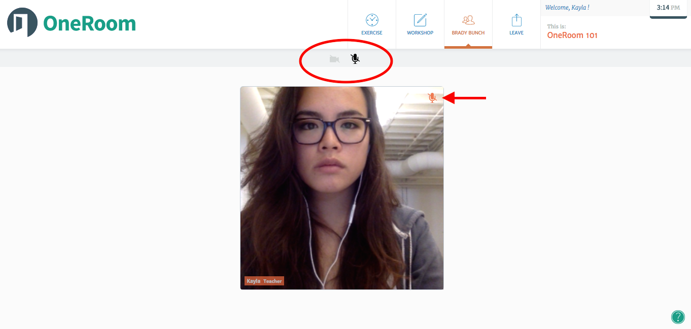

What browser should I use?
Right now OneRoom only runs on Google Chrome. We don’t (yet) run on other browsers or devices other than computers.
If you don't already have Google Chrome on your computer, download it here!
How do I mute myself?
Muting is a useful tool if you’re in a noisy place, or are sick and plagued with constant coughing!
You'll find the mute button in the gray bar located above the videos in your live class. The mute button looks like a mini microphone icon, and appears light gray when deactivated. When you click the button and mute yourself, you will see the microphone button turn black and a red microphone icon will appear in the top right corner of your video box.  And, to un-mute yourself, simply click the black microphone button again!
How do I turn my video off?
To turn your own video feed off, click the light grey button (that looks like a camera), located above the live videos. When you turn your video feed off no one will be able to see you and your video box will look like this:
 To turn your video back on, just click the camera button (now black) again.
To turn your video back on, just click the camera button (now black) again.